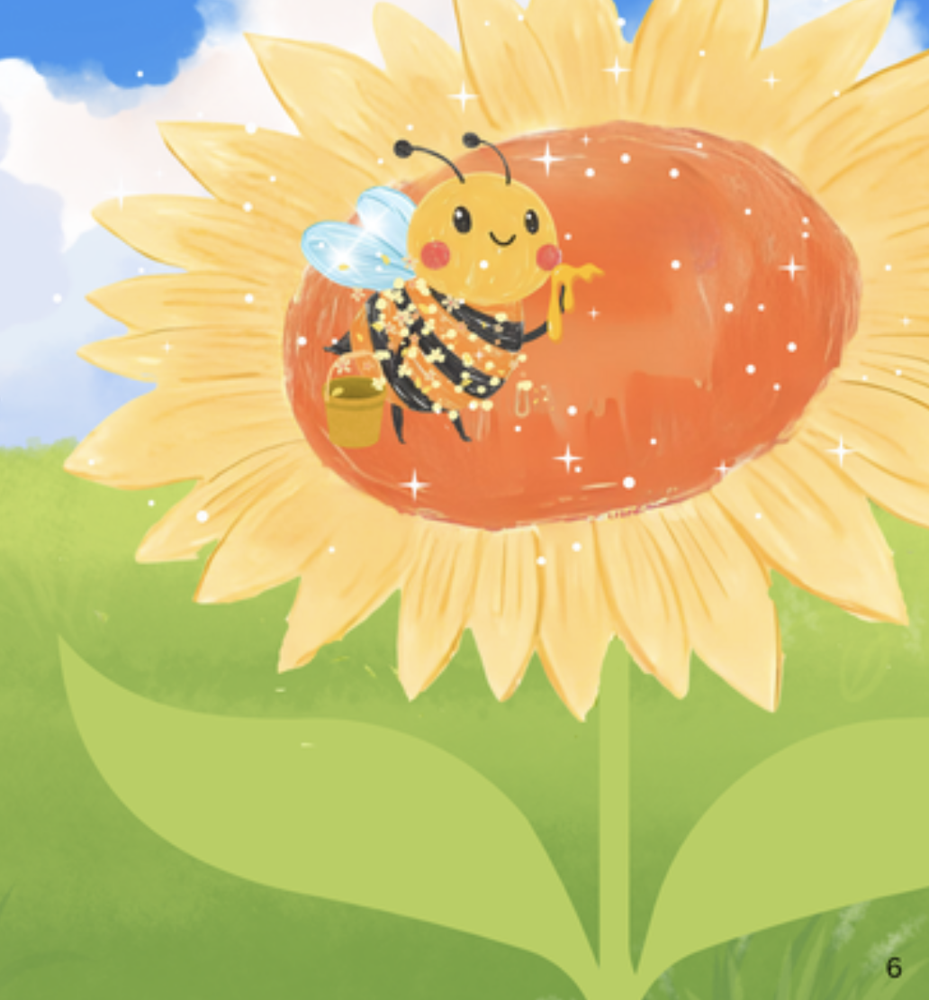
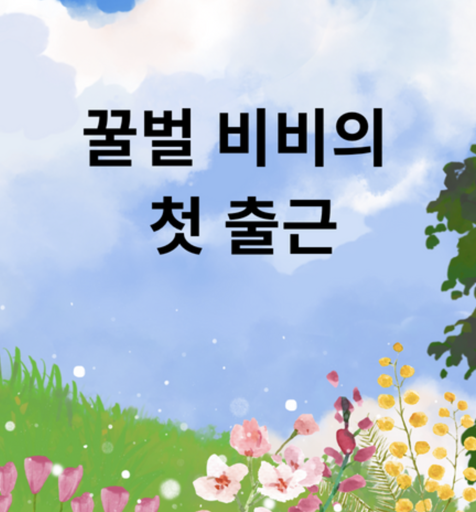
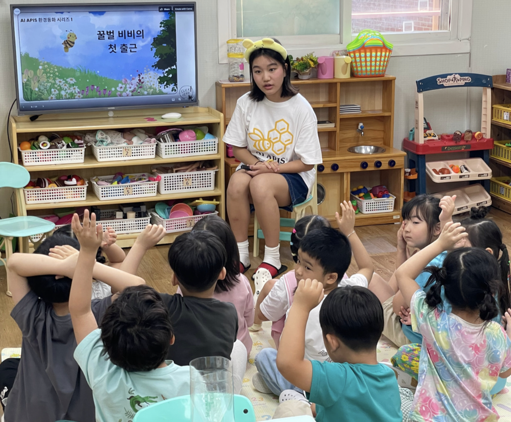
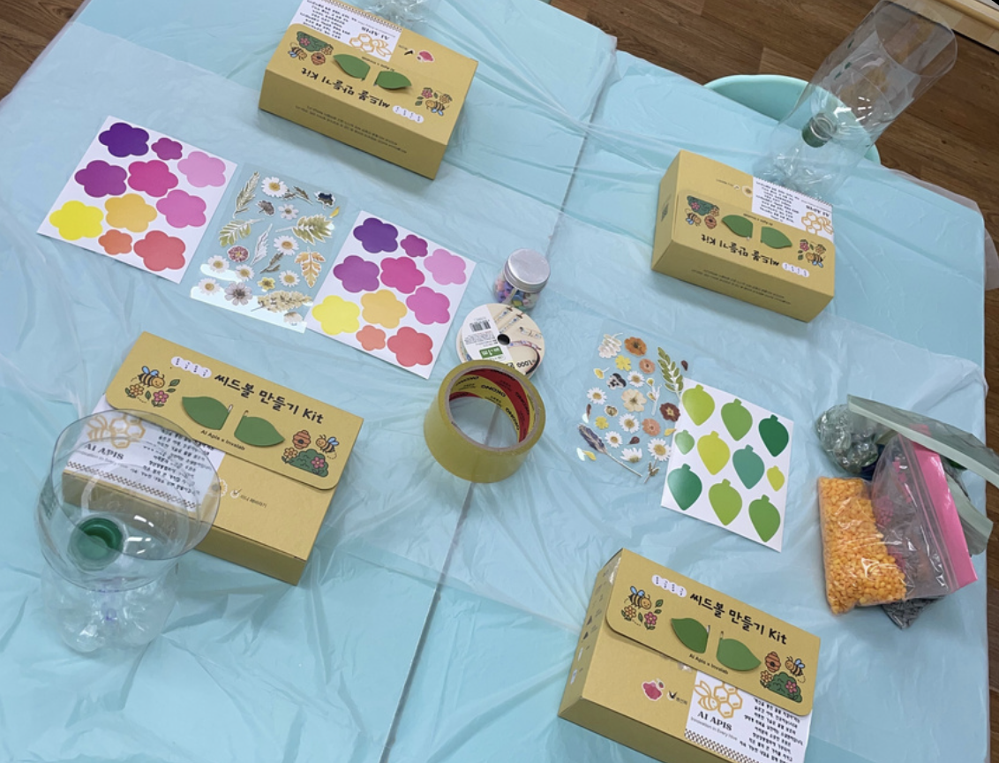
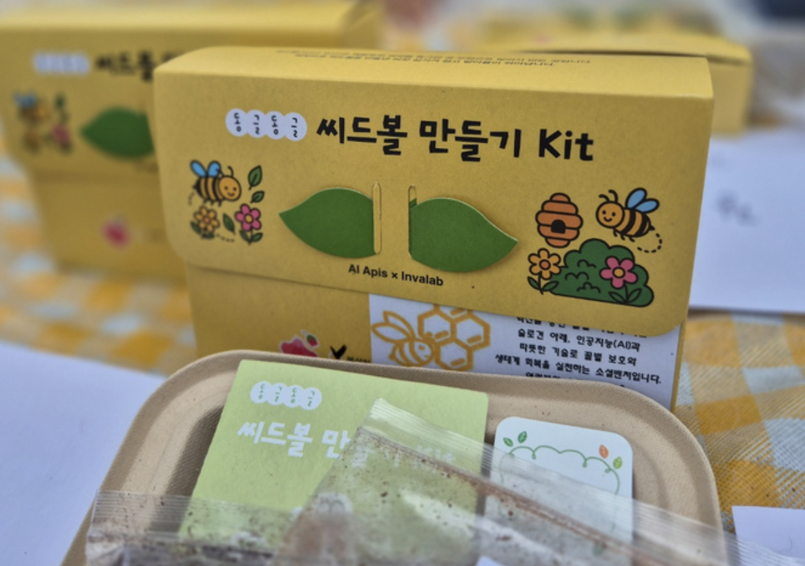
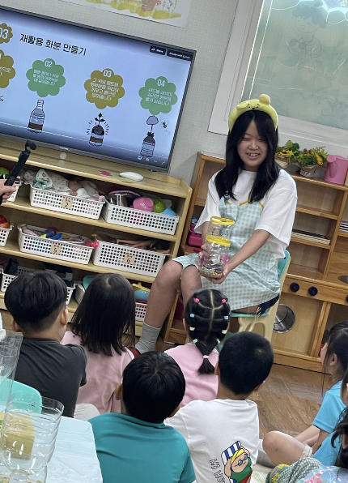
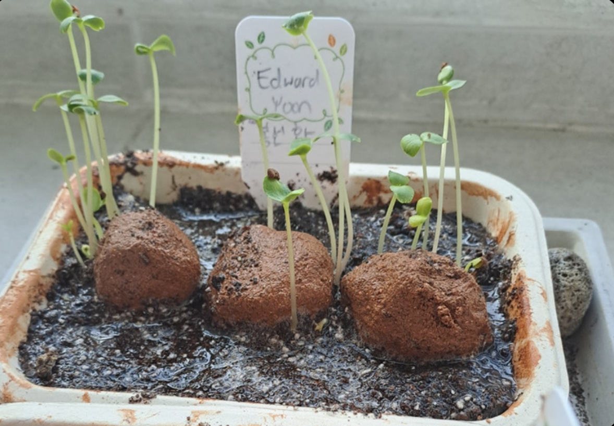
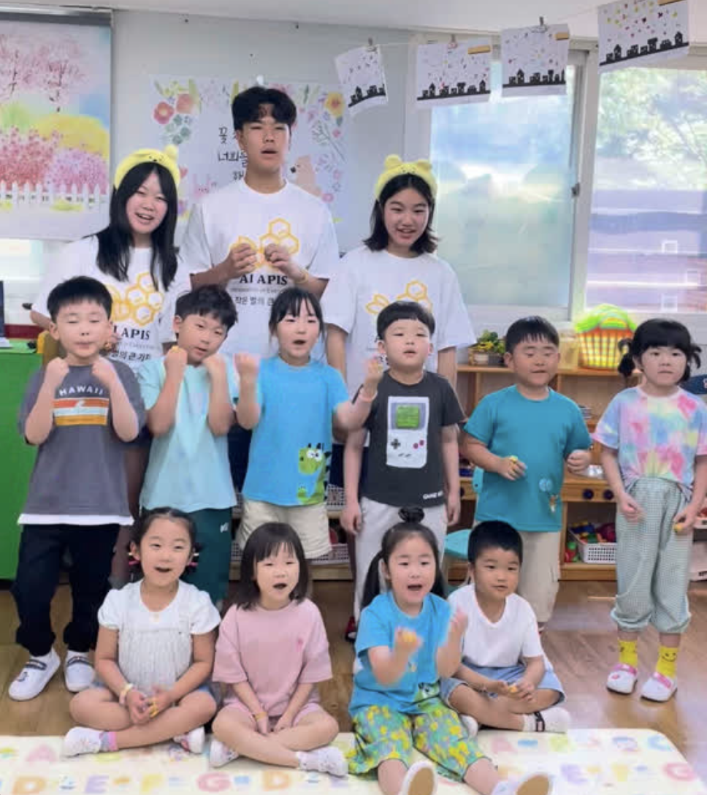
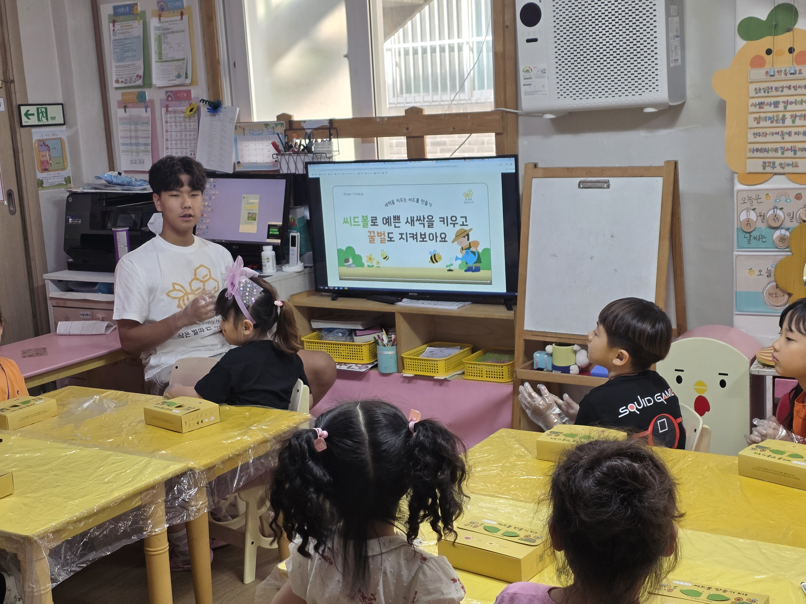

Children begin their journey with the story of "Bibi the Bee", discovering how bees work together in harmony to support flowers, fruits, and life on Earth.
Through guided discussions and observation of real hive footage, they learn how pollination connects nature's cycles — sparking curiosity about the delicate relationships between humans and ecosystems.
This class encourages children to ask, "What would happen if bees disappeared?" — fostering early awareness of environmental interdependence.



Through fun, interactive environmental craft sessions, children deepen their ecological understanding by creating something tangible that gives back to nature.
Creating a Recycled Bottle Flowerpot
This hands-on activity helps students understand the cycle of life — how simple recycled materials can support new growth and attract pollinators.



In the final session, children reflect on what they've learned by imagining life from a bee's perspective — how it feels to work, explore, and care for its community.
Through interactive storytelling, drawing, and sharing circles, they express their feelings toward nature and discuss how small acts of kindness — like planting flowers or reducing waste — can protect the environment.
This class nurtures empathy and responsibility, helping children realize that caring for bees means caring for the planet and for one another.



Celebrating the measurable impact of our "To BEE Friends" journey — inspiring young minds through environmental education and action.
200+ Children participated
Seedballs distributed
Created by students
Requested nationwide
Explore our interactive learning tools — designed for curious young minds.